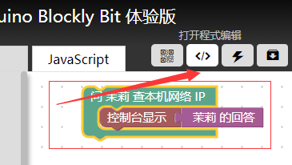
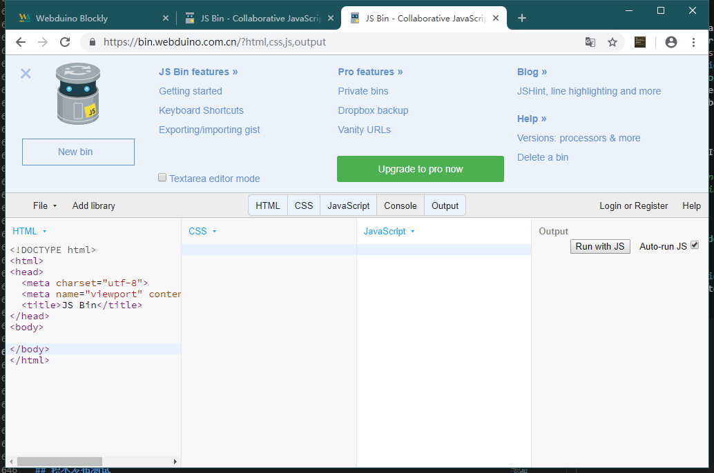
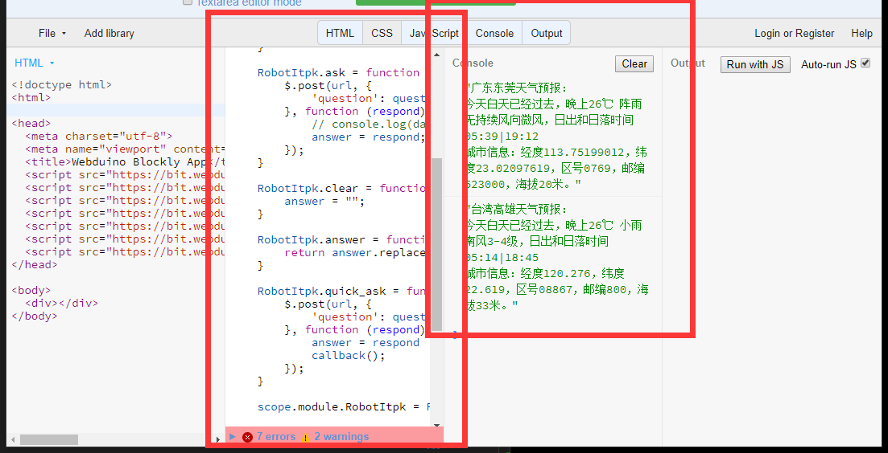

积木功能测试
当我们知道了如何添加自己的功能代码，就要脱离这个 Blockly 生产环境来测试我们的代码了，在开发环境中，分本地和在线测试运行代码，需要注意的是，本地测试的代码具备一定的特殊性，比如没办法依赖 Webduino 中提供的其他功能，例如无法使用 webduino.module 这个模块变量。
本地测试积木功能
所以在本地写经典代码时，一般需要单独测试和移植，例如下面的茉莉机器人 API 的测试代码 itpk.html 。
<!DOCTYPE html>
<html>
<head>
<meta charset="utf-8">
<title>茉莉机器人 API 测试</title>
<script src="https://code.jquery.com/jquery-3.3.1.min.js"></script>
</head>
<body>
<script>
AskItpk = function (question) {
$.post("http://i.itpk.cn/api.php", {
'question': question
}, function (data) {
console.log("数据：" + data);
});
}
AskItpk('东莞天气如何？');
</script>
</body>
</html>
代码无高低，能用就行。
通过这样的方式再转换改写成 itpk.js 的模块结构代码，看如下代码。
+(function (factory) {
if (typeof exports === 'undefined') {
factory(webduino || {});
} else {
module.exports = factory;
}
}(function (scope) {
'use strict';
const url = "https://i.itpk.cn/api.php";
var answer = "";
function RobotItpk() {
Module.call(this);
}
RobotItpk.ask = function (question) {
$.post(url, {
'question': question
}, function (respond) {
// console.log(data);
answer = respond;
});
}
RobotItpk.clear = function () {
answer = "";
}
RobotItpk.answer = function () {
return answer.replace("[cqname]", "moli");
}
RobotItpk.quick_ask = function (question, callback) {
$.post(url, {
'question': question
}, function (respond) {
answer = respond
callback();
});
}
scope.module.RobotItpk = RobotItpk;
}));
function unit_test() {
webduino.module.RobotItpk.ask('东莞天气如何？');
setTimeout(function(){
console.log(webduino.module.RobotItpk.answer());
webduino.module.RobotItpk.ask('高雄天气如何？');
setTimeout("console.log(webduino.module.RobotItpk.answer())", 1000);
}, 1000);
}
// unit_test();
但你也可以直接使用 AMD JS 代码的方式，规范的模块化整合到积木环境中，这就需要你具备一定的现代 JS 代码模块规范的基础，可以先了解 webpack-demo 或配合这个示例项目 webpack-develop-example 来操作，这将有利于你写出规范的专业代码，就像下面这样的代码直接编译运行在浏览器，这将高度符合 Webduino Blockly 的运行环境。
(function (root, factory) {
if (typeof define === 'function' && define.amd) {
// AMD
define(['jquery'], factory);
} else if (typeof exports === 'object') {
// Node, CommonJS etc
module.exports = factory(require('jquery'));
} else {
// Browser global variable (root is window)
root.returnExports = factory(root.jQuery);
}
}(this, function ($) {
'use strict';
const url = "https://i.itpk.cn/api.php";
var answer = "";
var proto;
var RobotItpk = function () {
};
RobotItpk.prototype = proto = Object.create({
constructor: {
value: RobotItpk
}
});
proto.ask = function (question) {
$.post(url, {
'question': question
}, function (respond) {
console.log(respond);
answer = respond;
});
}
proto.clear = function () {
answer = "";
}
proto.answer = function () {
return answer.replace("[cqname]", "moli");
}
proto.quick_ask = function (question, callback) {
$.post(url, {
'question': question
}, function (respond) {
console.log(respond);
answer = respond
callback();
});
}
window.RobotItpk = RobotItpk;
}));
var ts = new window.RobotItpk();
ts.ask("nihao");
setTimeout(function () {
document.write('<h1>' + ts.answer() + '</h1>');
}, 1000);
在线测试积木功能
我们可以在积木的时候里面进行代码的查看，如下图操作。

如你所见，可以在这里进行代码的运行以及调试。

JS bin 是一款在线编写浏览器 JS 工具，可以在这里进行你的调试于测试，比如我们可以这样做，将 itpk-blockly.js 或 itpk.js 文件代码放入下图所述位置，即可自动运行输出。

上图需要你点开 Console 控制台输出 debug 信息，并且粘贴 itpk.js 代码后拉到低下取消 unit_test() 的注释，从而运行单元测试，默认修改代码自动运行。